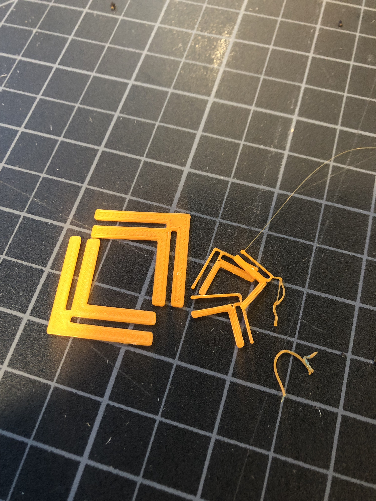

Assignment 4: Moving Parts

For this assignment, I just wanted to make something sucessfully move smoothly without getting
too complicated. When I was younger, I remember an elementary school teacher using a mood indicator to
help understand how the class was feeling. I decided to make one.
Process
I had such a hard time 3D printing, I really did not want to 3D print again so I decided to laser cut
cardboard to keep the cost of everything low. I also modified the mood indicator a bit by making including a second short hand.
I decided to add a second hand just to practive OnShape and also, I figured one hand could be used to indicate how I'm feeling
and the other one how I would want to feel. I started the shapes by using the rectangle tool and then used the line tool to make
the arrow head. Once I had the shape I wanted, I extruded the arrow to the width of the cardboard (0.1 inches). The bigger
arrow is 5 inches and the smaller one is 4 inches in length. After I got the sizing down, I worked on the hole for the rivets.
Since the arrows would be at the base of the rivet, I set the whole to .180 inches. For the flat piece the indicator would be on,
I set the hole to .20 inches since that part of the rivet is thicker. I created an assembly in OnShape using all three pieces in order to test it.
I used a laser cutter to cut the two arrows and the base.


Once I had everything laser cutted, I put it together and added moods with a sharpie!
 Issues
Issues
Problem 1-3:
The printer was having issues clearing out the previous filament and I didn't know how to trouble shoot. Had to change filaments.

Problem 4:
Glue dried up from having to heat up the printer so many times that it popped off in the middle of printing

Problem 5:
I don't even know what happened

Problem 6:
The large connectors (first iteration) completely broke the wood panels. I had to redo the panels on cardboard.

Final Design
My glorious lamp came together and made my tangled dreams come true. I only used the small connectors and did not end up using the larger ones at all.


Source Files, Specs and Peer Attributions
Rhino files for Connectors here
Illustrator Files here
STL Files here
Model Specs: PLA, Low Quality, 20% infill, 27 grams
Hannah, Kira and D'Marcus for emotional support during this difficult time